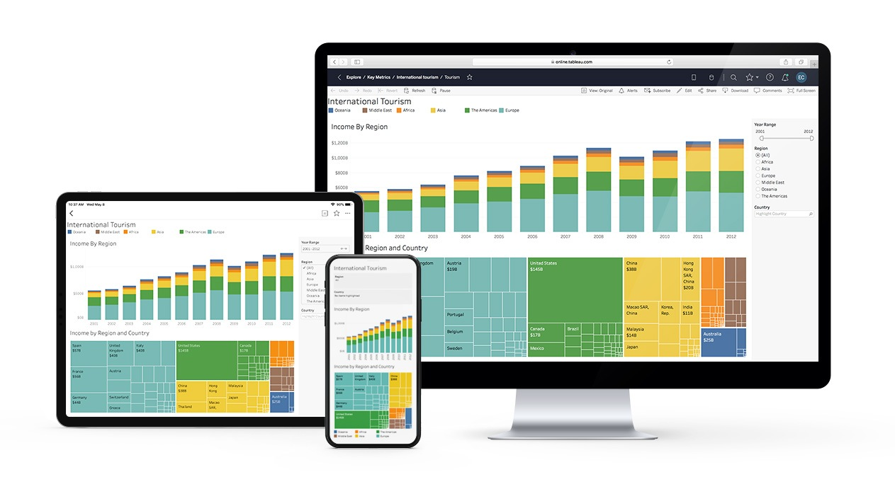

In this project, we extracted data out of the database in SQL Server.
The goal was to explore, extract/consult and further operate data if necessary to draw the needed analysis.

In this project, with the help of Python and Machine Learning,
we try to create a model that can predict (based on data)
when a person could or could not have heart disease.

In this project, we take a raw unedited database and transform
it in SQL Server to make it more usable for further analysis.

This is my Tableau Public Profile that showcases the dashboards I prepared. For the moment, a COVID-19 dashboard was set using the databases previously managed in the SQL projects mentioned.

In this project, we use Python to look at the impact and correlation among the variables inside the movies industry with an special focus on gross revenue.